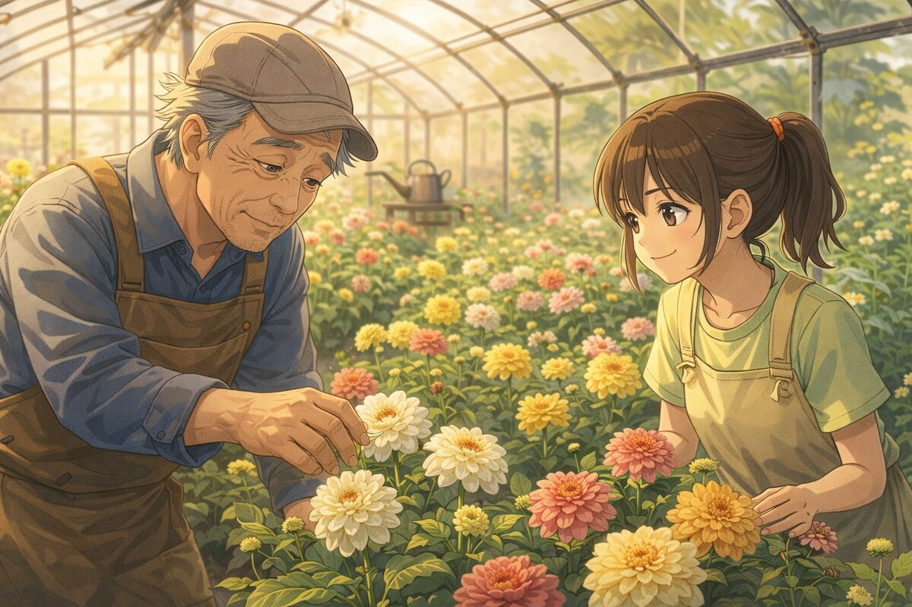
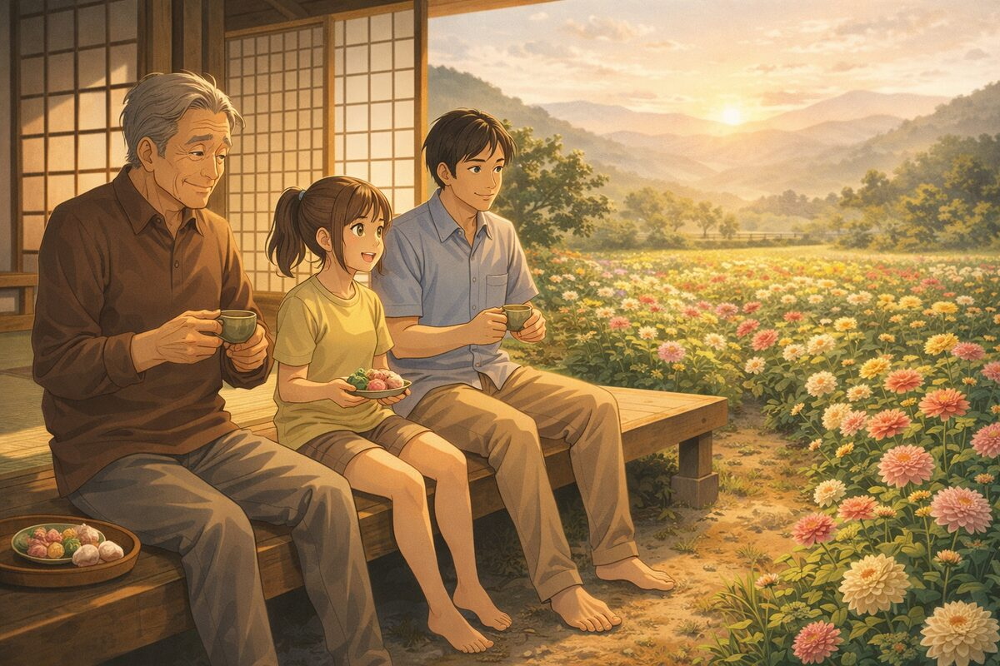

OVA（全3話） | 2023年
花咲くころに
When Flowers Bloom
| カテゴリ | OVA |
|---|---|
| 話数 | 全3話 |
| 公開年 | 2023年 |
| ジャンル | 日常・ヒューマンドラマ |
| 担当 | 企画・制作（元請） |
あらすじ
長野県の小さな町で代々花農家を営む菊池家。祖父の正一、母の美咲、そして東京から戻ってきた孫の花——三世代それぞれの想いが、花畑のなかで交差する。
祖父が守ってきた伝統品種のダリア。母が新たに始めたエディブルフラワーの事業。花がカメラで切り取る、日々の風景と家族の記憶。
派手な展開はないけれど、観終わったあとにそっと温かくなる。Aoki Animationの原点とも言える、丁寧な日常アニメーション。国内アワードにノミネートされた。
スタッフ
監督
白石 遥
脚本
柚木 千尋
キャラクターデザイン
桜庭 あおい
音楽
小野寺 琴音
美術監督
橘 ことは
ギャラリー

